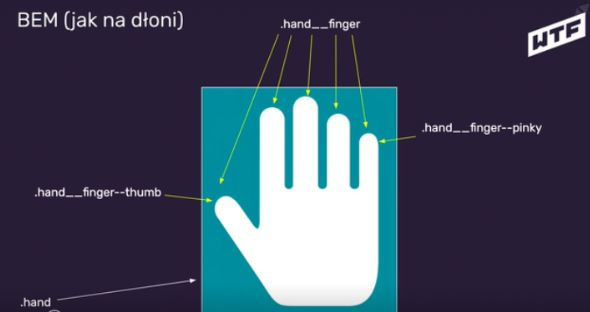
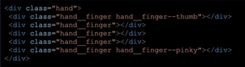
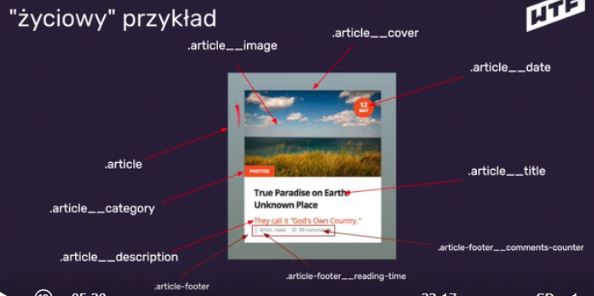
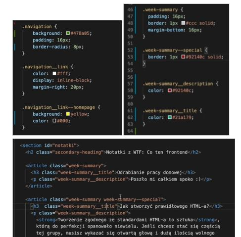
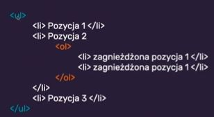
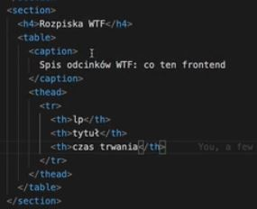
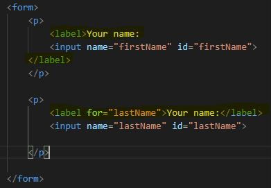
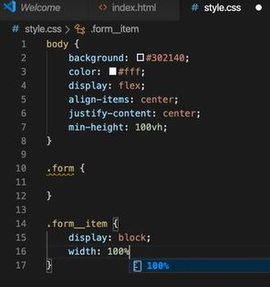
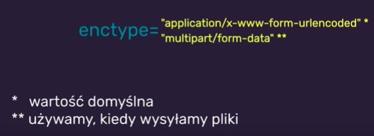
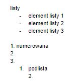

HTML = HyperText Markup Language - język znaczników (nie jest
językiem programowania), odpowiada za opakowanie treści (opakowuje i
opisuje treść strony).
Jest szkieletem strony internetowej: (head, body), składa się ze
znaczników/tagów/elementów. Mówi przeglądarce o strukturze dokumentu
i o tym co ma wczytać.
Powinien być semantyczny - mający znaczenie - używamy znaczników
semantycznych.
Aktualną rekomendowaną wersją jest HTML 5.2
Cała specyfikacja znajduje się na stronie W3C
Specyfikacja HTML.
Znaczniki
HTML Posiada swoją zdefiniowaną składnie:
<znacznik atrybut=”wartość”>treść</znacznik>
Podstawowe znaczniki:
<main> główna część dokumentu
<section> sekcja dokumentu np. sekcja sportu w gazecie
<article> samodzielne treści np. pojedynczy artykuł danej
sekcji
<header> nagłówek dokumentu/sekcji/artykułu
<footer> stopka dokumentu/sekcji/artykułu
<h1-h6> tekstowe nagłówki tytułowe, h1 na stronę
<p> paragraf/akapit, nie powinno się do środka <p>
wrzucać nagłówków.
Section jest mniej ważnym podzielnikiem, dzieli rzeczy na sekcje,
może dzielić stronę.
Article to coś co zamyka się w jedną całość, artykuł może mieć
swoje sekcje, artykuł jest mocniejszy znaczeniowo.
Można mieć artykuł w sekcji na stronie i sekcję w artykule.
Sekcja wydziela, artykuł niesie treść.
Wszystko co jest powtarzalne na każdej stronie np. header lub
footer dodajemy poza main.
W przypadku landing page header i footer może być w main i to nie
błąd.
W przypadku bardziej złożonych stron i podstron wtedy header, main
i footer oddzielnie.
HTML w VSC
Nazwa dla pliku głównego: index.html
Nazwy plików: mała litera, bez polskich znaków, bez spacji,
używamy “-”
Zaczynamy w pliku od “!” i klikamy “tabulator”, pojawia nam się
szkielet strony:
<!DOCTYPE html>
<html lang=”pl”>
head
body
Elementy do wyróżniania tekstu:
<b>, <i> nie mają znaczenia semantycznego, wyróżnienie
tylko wizualne
<strong> znaczenie semantyczne, podkreśla istotność i
poważność frazy
<em> znaczenie semantyczne, podkreśla, że tekst może mieć
inne znaczenie np. ironia
img - obrazek o podanym adresie, samozamykające jak br
<img src=”” alt””>
Nawigacja w obrębie dokumentu
<element id=”moj-identyfikator”>
atrybut id identyfikuje element, służy do nawigacji wewnątrz
dokumentu
<section id=”notatki>
<a href=”#notatki”>Przejdź do notatek</a>
powrót na górę strony
<header id=”top”>
<footer> bla bla bla <a href=”#top”>Wróć na górę
strony</a>
Linkowanie między stronami
Do tego celu używamy znacznika nav
<header>
<nav>
<a href=’index.html> <a href=’html.html>
HTML part III
BEM: Block - Element - Modifier
Block - nadrzędny element, coś co nam ogranicza nasz content.
Element - część bloku - nie musi być bezpośrednim dzieckiem
Modifier - modyfikator, jeśli element występuje w kilku wariacjach
tworzymy dodatkową klasę.
Szukamy elementów na stronie i dzielimy ją na bloki Myślimy o
elementach składowych/ robimy analizę-selekcję. Trzeba najpierw
podzielić na bloki i uzupełnić HTML potem CSS. Nie stosujemy skrótów
przy nazywaniu klas, lepiej pełna nazwa.
Przykład I
Cała dłoń jako .hand czyli nasz 1 główny element, ma swoje
podelementy, które są palcami
.hand__finger bazowa klasa dla każdego z palców, kciuk ma
modyfikator .hand__finger--thumb (jakaś własność dla kciuka jest
inna od pozostałych palców), dodaje własności specyficzne tylko dla
kciuka, albo nadpisuje część wartości z tej klasy bazowej.
Klasa każdego z elementów zaczyna się od nazwy, bloku czyli hand,
potem element finger i modyfikator thumb. 2 klasy są tylko wtedy
kiedy mamy modyfikator.


Przykład II
Opisujemy to czym jest ten element pod kątem treści, nawet jak to
będzie opakowane w sekcję to się może nazywać klasa article.
Może też być blok w bloku jak np. .article-footer, można też zrobić
footer jako element czyli aricle__footer.

Przykład III
Nawigacja to blok, link to element navigation__link, link do strony
głównej to może być modyfikator czyli navigtion__link--homepage
Podstawowe style nadajemy do klasy bazowej navigation__link a to co
chcemy mieć dodatkowo dajemy do modyfikatora
navigtion__link--homepage, nie przepisujemy wszystkiego.
Tworzymy dwie klasy jeśli element ma modyfikator - w modyfikatorze
zmieniamy tylko unikalne dla niego wartości, nie przepisujemy rzeczy
z klasy bazowej.
W CSS dobrze ustawić alfabetycznie. Nie zwiększamy specyficzności.
Trzymamy się jednej klasy.

HTML part IV
Listy, tabele, definicje
<ul> unordered list, <li> list item, <ol> ordered
list
list-style-type domyślne style przeglądarki są ustawione
list-style: none; square etc. zbiorowa własność
wartość tej własności to list-style-type tak już konkretnie
Możemy też zagnieżdżać listy, wewnątrz li.

<dl> description list, <dt> description term, <dd>
description details
np. do listy definicji/ wskazówek
Tabele:
<table>
tr wiersz tabeli, table row
td komórka tabeli table data-cell
thead nagłówek tabeli
th komórka w nagłówku tabeli
tbody ciało tabeli
caption opis tabeli
też ma ustawienia domyślne przeglądarki, warto dodać klasę i ją
rozszerzyć na 100% np.table class=”table”
Tabeli używamy do danych tabelarycznych, nie używamy ich do
budowania layoutów

HTML part V
Formularze
Formularze służą do komunikacji ze światem, zewnętrznymi serwerami albo wewnątrz w obrębie naszych aplikacji chcemy coś pobrać . Elementów formularzy używamy na co dzień.
Form, input, label
Znacznik formularza
<form> takie opakowanie na nasz formularz
<input> podstawowy element, który buduje nasz formularz
inputa możemy opakować w <p> albo <div> albo listy
<p><input></p>
enter domyślnie wysyła formularz
name=”nazwaPola” każdy input musi mieć name, tak jakby zmienna ten input np. firstName, do identyfikacji wartości w miejscu, do którego nasze dane wysyłamy
id=”nazwaPola” nazwa może być taka sama jak name, do identyfikacji naszego inputa, czyli pola wprowadzania danych wewnątrz DOM.
<label> też w p, stworzy nam opis pola, ten opis obok pola
<label>blabla</label>
<label for=”firstName”>bla bla</label> żeby ten tekst był całością z polem
ale możemy też opakować:

Inputy’ mają różne typy, domyślny text
type=”text”
value=”wartość” jak wpiszemy tutaj wartość to w formularzu pole będzie uzupełnione
placeholder=”tekst podpowiedzi”
Podpowiedź się pojawia jak jest puste pole, jak coś piszemy to znika , a jak jest value to musimy je usunąć żeby zobaczyć placeholder. Atrybut placeholder nie zastępuje elementu label - dla czytników ekranowych. Do opisywania pól zawsze używamy labelków!
<p> <label> <input>placeholder</label></p>

Fieldset, radio, checkbox
Fieldset - grupa pól a legend to opis grupy pól
<fieldset>
<legend>Address</legend>
<p><label> Street name:<input class=”form__item” id=”streetName” placeolder=”Please enter street name” name=”streetName”/></label></p>
</fieldset>
podobnie dla city
type=”radio” radio buttony
<fieldset> legend favourite icecream flavour
<p><label><input type=”radio” name=”iceCream” value=”chocolate”>chocolate<label>
jeżeli ma być grupa radio buttonów to name musi być taki sam dla całej grupy, żeby one mogły się przełączać
value nie musi być tym samym czym label
type=”checkbox”
fieldset bez legend p label input name (checked)type value> i agree</label>p
możemy ale nie musimy podawać wartości, jeśli nie podamy to wysłane będzie “on”
checked atrybut, który domyślnie zaznacza daną wartość, nie trzeba mu dodawać wartości
Number, tel, email, range, password, file
type=
p label favourite number
input class id placeholder name type=”number”
można wpisywać tylko cyfry, jest taka strzałka wybieraczka do numerów
tel nie ma światowego standardu
email np. daje podpowiedzi
range budowanie zakresu
<input type=”range> min=”0” max=”100” step=”5>
bez placeholdera, taki suwak, ale nie pokazuje wartości
do class dodajemy range--js zeby podejrzec wartosc
const myRange = document.querySelector(‘.range--js’);
myRange.value pokazuje to co wybrane, to co się kryje w inpucie, value dotyczy wszystkich inputów
password
z gwiazdkami np
file,
bez placeholder,
możemy dołączyć plik do przesłania, do wyboru plików
Select, textarea, submit
select element pozwala na zrobienie listy wyboru
<label for=”band”> Pick one band </label>
<select name =”band” id=”band”>
<option value=”band-1>bla</option>
<option>bla</option>
używamy value jeśli chcemy potem przesłać inną wartość niż wpisana
<textarea>, do wprowadzania dłuższej treści
p label for Your story textarea, cos - nie ma value dlatego musimy możemy coś wpisać między te dwa tagi, i to się pojawia w okienku, okienko może się rozszerzać, textarea, label display: block, textarea width 100%, height:
input type=”submit” wysyła formularz, to co wpiszemy w value to legenda tego submita, nie posiada labela, tylko w p je opakowujemy
GET i POST
atrybut action=”url://z-którym-gadamy”, domyślna wartość to adres pod, którym się teraz znajdujemy
form action=”https://dev.cotenfrontend.pl”, rządanie typu get
przy buttonie radio czy option value nie musi być tym samym czym label, to co w label jest nieistotne
wtedy po wysłaniu pokazuje się to co w value
https://dev.cotenfrontend.pl/?parametr=wartość
możemy wejść w network i zobaczyć request methods, albo query string parameters, można modyfikować w tym linku a to nie dobrze
post, do form możemy dopisać method=”post”, rządanie typu post, form data zamiast query stringa, nie wysyła znaków dodatkowych, bezpieczniejsze
get do pobierania danych post do wysyłania danych
enctype: czy to jest zwykły formularz czy zawiera inne treści poza tekstowymi
jak chcemy wysłać plik to musimy zmienić enctype na form data i wtedy serwer, który będzie odbierał to żądanie będzie wiedział, że może być tam jakiś plik

Walidacja
Sprawdzanie poprawności danych, które wprowadzamy do formularza
atrybut required bez wartości, jak nie wypełnie pola i chcę wysłać to dostaje info, że to pole musi być wypełnione
albo jak w mailu nie podamy pełnej nazwy to też nam mówi hej to nie jest email
walidacja następuje po stronie przeglądarki
Paterny z wykorzystaniem wyrażeń regularnych
do walidacji poprawności danych
małe litery duże litery cyfry, każdy inny znak będzie traktowany jako niepasujący
uwaga z tej strony polski kod pocztowy jest niepoprawny bez / mówi nam 2 cyfry - 3 cyfry
pattern do inputu,
jak wpisze zły kod pocztowy i chcę wysłać to będzie info, że zły
walidacja po stronie frontendu nie zastępuje walidacji po stronie backendu
HTML part VI
Markdown
Markdown
-uniwersalne formatowanie tekstu
-czytelne zarówno w formie źródła jak i wyniku
-bezpieczne wprowadzanie treści bez konieczności korzystania z HTML
-nie trzeba pisać edytora
nie ma znaczników HTML, nie ma semantyczności, mamy zestaw innych znaczników
# nagłówek (h1), ## nagłówek II (h2), ### nagłówek III (h3)
https://dillinger.io/ edytor
paragrafy normalnie zapisujemy
linki [WTF] (link) to samo co a href
obrazki ! [Alt obrazka] (ścieżka do obrazka pełna) to samo co img src alt
kwadratowe przed okrągłymi k przed o alfabetycznie []()
wyróżnianie tekstu
`polecenie / jednolinijkowy kod`
```javascript
blok
kodu
```
jak podamy język to czasem kolorowanie składni w zależności od edytora markdowna
wyróżnienie tekstu
*test* kursywa
**test** pogrubienie
***test*** pogrubienie i kursywa
> cytat

Chcemy zrobić ładny readme
po zmianie readme na githubie musimy zrobić git pull, ściągnie się master w nowej wersji, możemy też edytować z naszego projektu
w pliku nowy folder dodajemy nowa fote do readme i podmieniamy ścieżkę
generalnie w readme piszemy coś o projekcie, jak go zmienialiśmy, co dodajemy, co w nim jest, jak go odpalić
 Paterny
Paterny